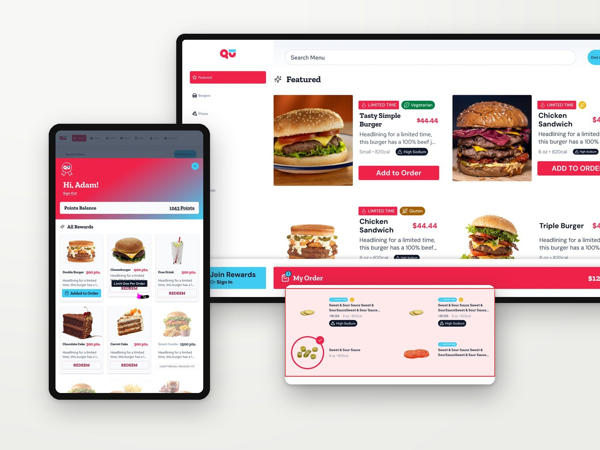
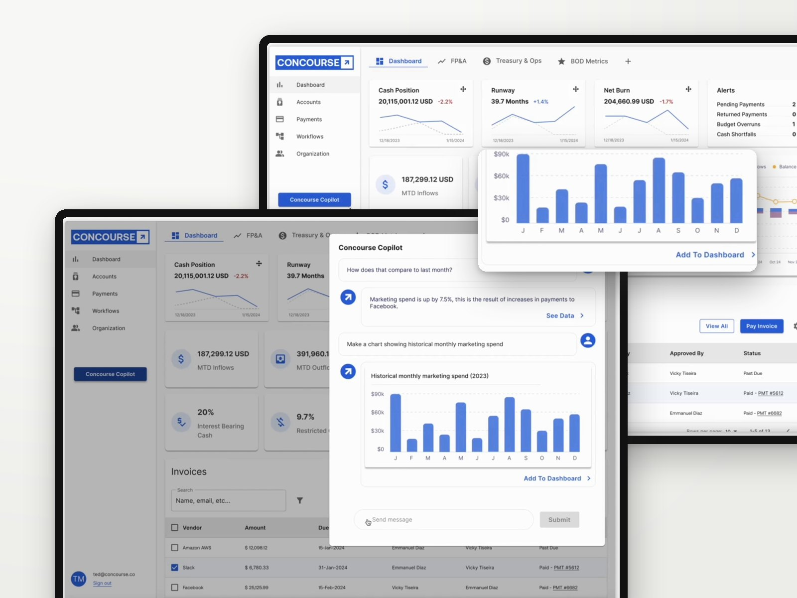
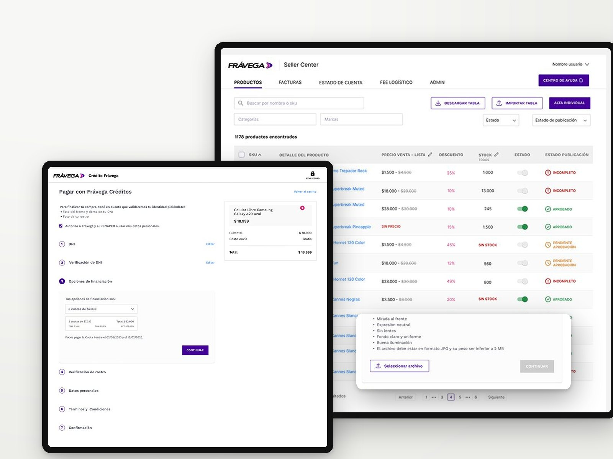

01
Qu: Kiosk Self-Service
How do you design one ordering flow that works for any brand's menu, in portrait and landscape?
Read the caseMa. Victoria Tiseira
AI-powered experiences, complex products & accessible design.
For 9+ years I've turned complex product challenges into clear, accessible experiences, combining product thinking, UX/UI and AI-assisted workflows. My background in graphic design and advertising shows in the craft.

How do you design one ordering flow that works for any brand's menu, in portrait and landscape?
Read the case

How do you bring order to a fleet platform that grew without structure, as the only designer?
Read the case
How do you simplify daily operations for sellers managing catalogs of 1,000+ products?
Read the case
How do you turn photos of retail refrigerators into commercial decisions?
Read the caseProblem framing, flows, information architecture, prototyping and usability testing.
Typography, composition and detail, from a background in graphic design and advertising.
Design systems built for scale, and WCAG as part of how every state is designed.
AI features people can verify and trust, and AI-assisted workflows in my own practice.

About
Most digital products fail because design decisions are based on opinion, not evidence.
I'm Victoria, a Product Designer who owns the full product cycle: research, flows, prototyping, design systems and developer handoff, with a strong focus on accessibility.
I've designed for restaurant tech, fintech and banking, airlines, retail and e-commerce, healthcare and logistics, working with product and engineering teams around the world.